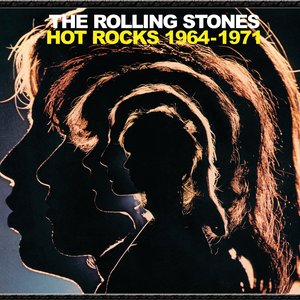

As a young teenager I became obsessed with the iconic rock and roll band "The Rolling Stones".
This obsession took me to many mediums starting with saving every penny I earned from babysitting to purchase albums
and cassette tapes. I remember buying my first walkman and listening to "Hot Rocks" over and over again.

I then began reading everything I could about this incredible band.
My main source of information came from "Up and Down with The Rolling Stones" by Tony Sanchez published in 1980.
 This book covered everything one needed to know about each band member and all of the band's crazy antics.
It was fascinating to my permeable teenage mind.
This book covered everything one needed to know about each band member and all of the band's crazy antics.
It was fascinating to my permeable teenage mind.
As I became more and more familiar with the band members I grew
to form a favorite - the quintessential "Charlie Watts"!
With all the controversy and antics of the other band members, I learned to appreciate Charlie's smooth, unasuming talents
and everything he brought to the band's success. At the time, Charlie's colleuges were the likes of Keith Moon of The Who
and John Bohnam of Led Zeppelin, yet Charlie was completely different. He was able to hide in the background, let all the other
band members do their thing and subtly drum away.
But people around the world to this day will recognize his riff's from "Honky Tonk Women" to "Sympathy for the Devil".